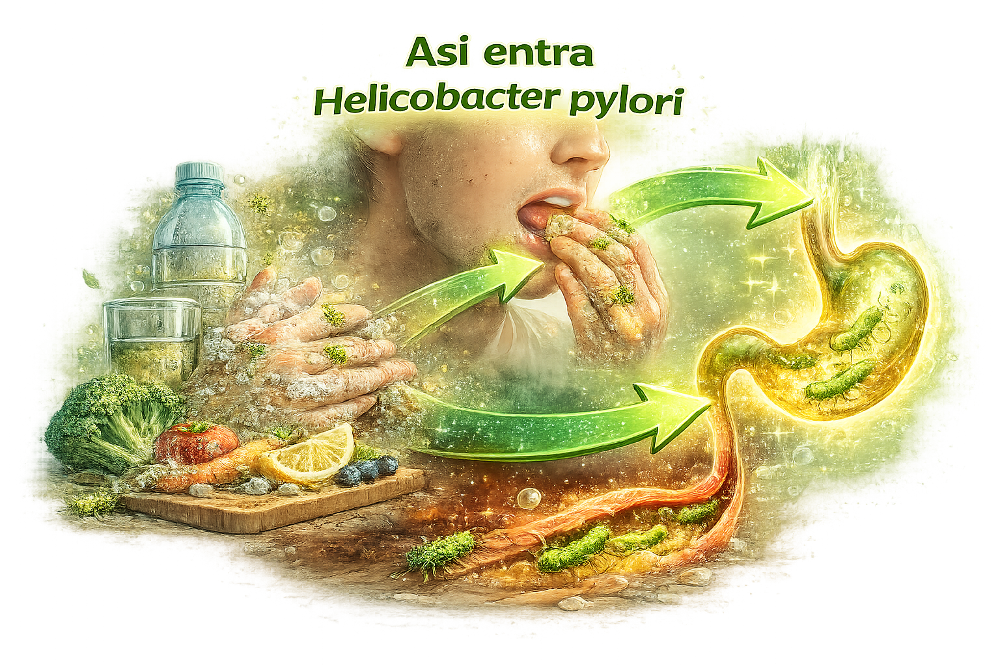
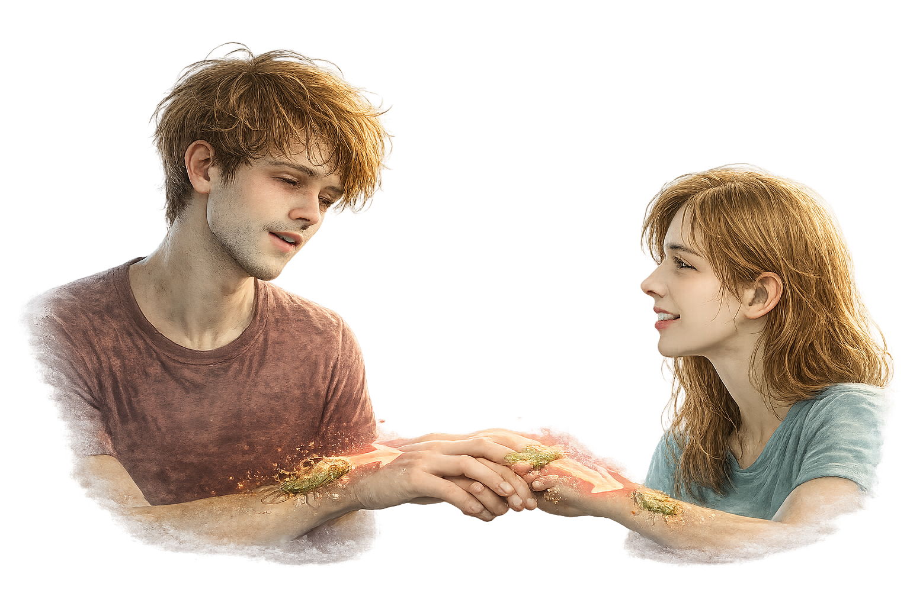
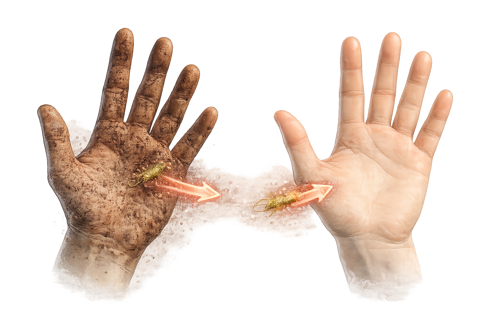
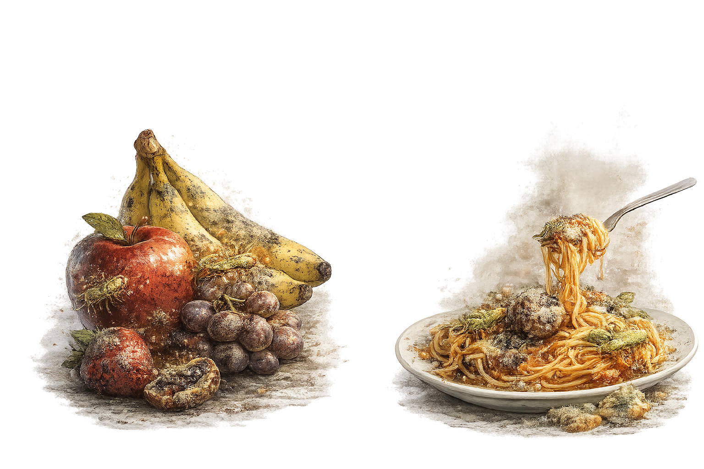
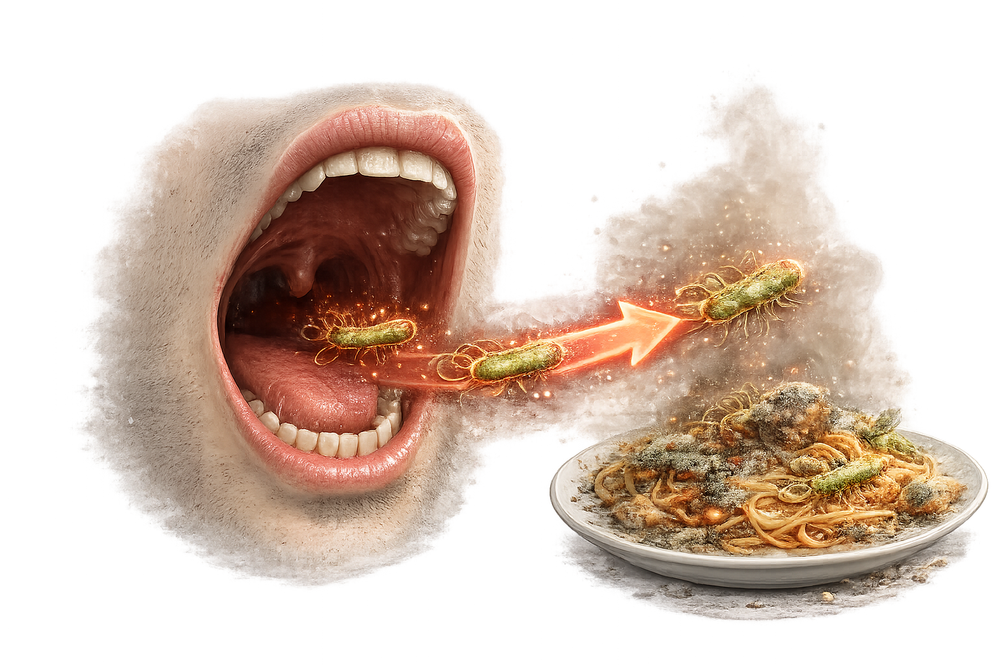
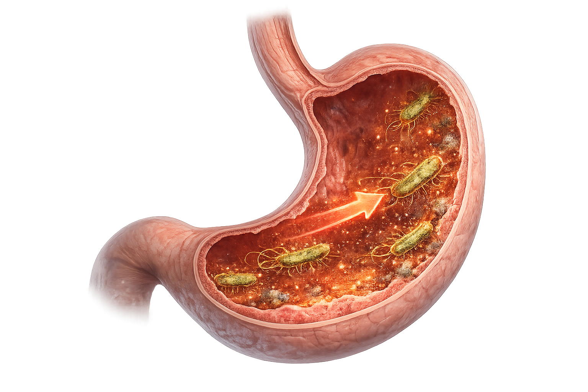
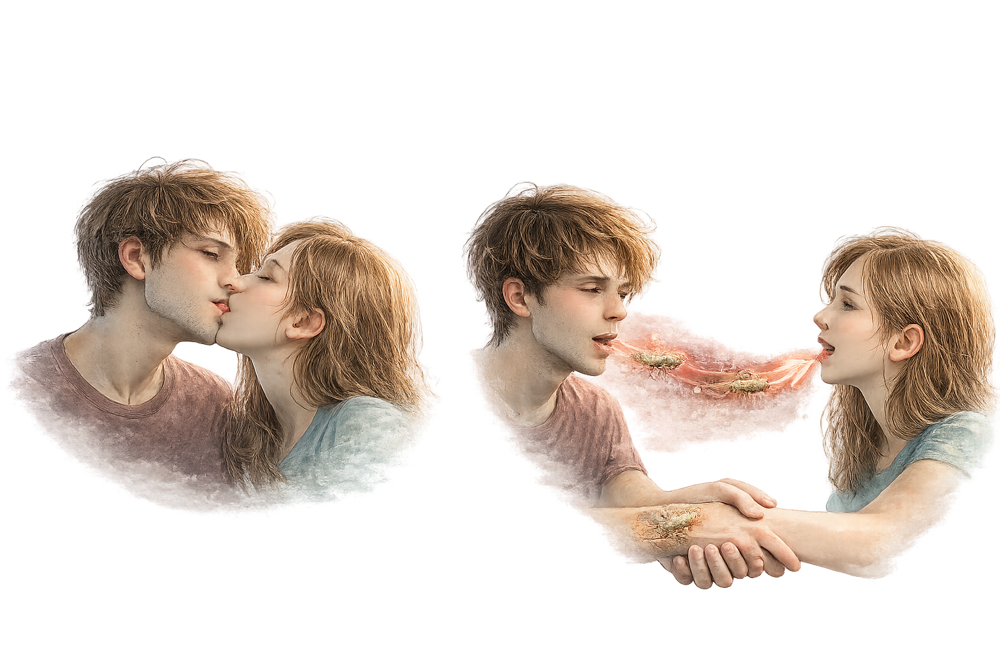
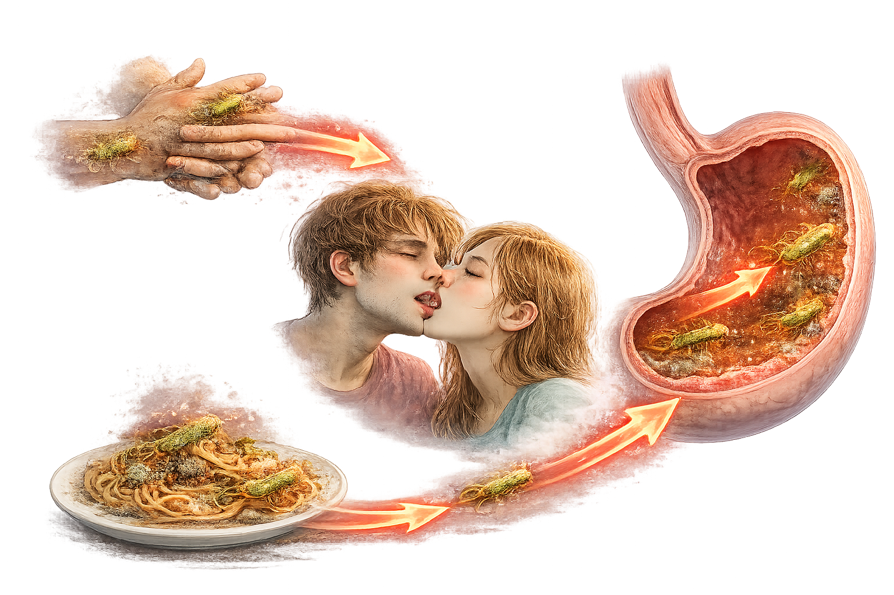
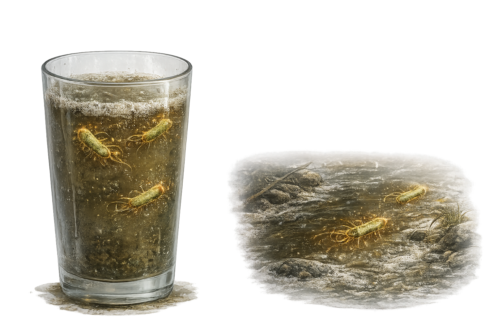

Pantalla 1: Simulación de contagio
Aquí se muestra el contagio directo entre una persona infectada y otra persona.
Persona infectada

Otra persona
Beso (saliva)
Utensilios compartidos

Contacto directo
Pantalla 2: Ruta completa del contagio
Ruta visual de cómo la bacteria puede pasar al cuerpo por mala higiene.

Manos sucias

Comida contaminada

Boca

Estómago (H. pylori)
Simulación contagio directo

Transmisión por saliva, besos o contacto directo.
Simulación contagio indirecto

Transmisión por agua, alimentos o mala higiene.
Pantalla 3: Agua contaminada
El agua no potable y las malas condiciones sanitarias aumentan el riesgo de infección.

Riesgo: Agua no potable
La bacteria puede transmitirse por agua contaminada.
Contexto:
Mayor riesgo en lugares con mala higiene y poco acceso a agua limpia.
Resumen del nivel 5
- Contagio directo: saliva, besos, utensilios compartidos
- Contagio indirecto: agua, alimentos, mala higiene
- Ruta visual del contagio
- Modo directo e indirecto con imágenes
- Agua contaminada como factor importante